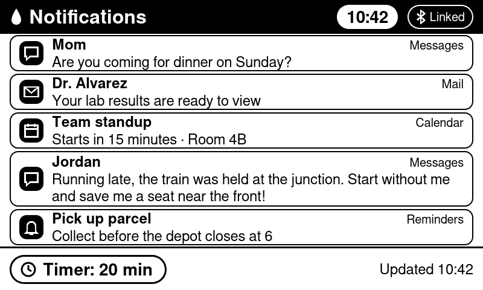

InkSlate
InkSlate is an e-ink notification display for my desk, built on an ESP32-S3 with an 800×480 black-and-white panel. It shows my iPhone's notifications over Bluetooth Low Energy, keeps its clock in sync with the phone, and runs a 20-minute countdown timer. The firmware is written in C and C++ on ESP-IDF, and the project is still in progress.

- Display
- 800×480
- 1-bit e-ink
- Refresh
- 0.4 s
- Partial. Full is about 1.9 s
- Chip
- ESP32-S3
- C and C++ on ESP-IDF
How it works
The display connects as an Apple Notification Center Service (ANCS) client, so notifications arrive over BLE with no companion app. The phone only needs to pair once from its Bluetooth settings. The BLE code is written in C and hands notifications to the display code through a FreeRTOS queue. The display keeps the eight most recent and draws each as a card with an icon for the app that sent it. The clock is set from the phone through the Current Time Service.
The display
Because the panel is 1-bit, I wrote a pixel-level UI spec before any drawing code: five screen states (normal, empty, unsynced, disconnected and timer done), fixed layout zones, and one font and icon for each role. A partial refresh takes about 0.4 s and a full refresh about 1.9 s. The firmware does a full refresh on every state change and after every 30 partial refreshes to clear ghosting.